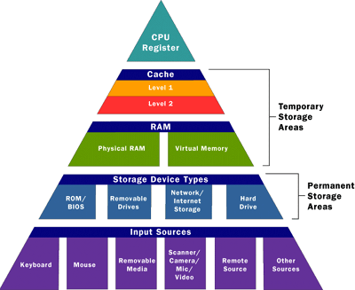

What's with all these acronyms and how do they affect me?
Computer memory is not something that most people think about on a regular basis. If they think about it at all it's usually when they're choosing a new computer, or perhaps when their computer displays some kind of memory-related error message. Few people even consider memory in places other than laptops, desktops, or tablets, but it also exists in devices like televisions and car radios. Computer memory is more complicated than a basic one-to-one relationship (I write a file, it's stored in memory), so let's dive in a bit and take a look.
The Acronyms
There are many acronyms related to computer memory, so it would help to list them out before we begin.
CPU: this stands for central processing unit. It's the piece of hardware within a computer that carries out the instructions given to it by a program. Think of it as a sort of brain for the computer. It relates to memory because it takes the instructions from the memory and translates them to perform the required function.
RAM: this stands for random access memory. It's a temporary storage device that contains data that's in use.
ROM: this stands for read-only memory. It's a storage device that's difficult to alter, so it's used sparingly and usually just when storing data that's not likely to need alteration over the lifetime of the device.
BIOS: this stands for basic input-output system. It's loaded from the ROM and contains basic information such as details about storage devices and boot sequence. It makes sure that all of the other chips, drives, ports, and CPU are functioning and function together.
The Hierarchy
The image above is a good example of the hierarchy of memory. I've talked a little bit already about RAM, but the cache may be new for some of you. Essentially the cache allows you to do tasks more rapidly by storing some information nearby. It can't store everything, but if something is present in the cache it provides a sort of shortcut so your computer doesn't have to look through everything in your permanent storage to find what you're asking for.
The permanent storage areas shown in the hierarchy image are probably the most familiar to most people. Whether it's internet storage like Dropbox, your computer's hard drive, or perhaps your external backup hard drive, the concept is almost universally known. These places store your files on a permanent basis. Your vacation photos, your Oregon Trail saved game files, your music acquired from questionable sources, it's all on one of these. Perhaps on several if you back things up regularly.
The hierarchy diagram also talks about input sources. Input sources are how the computer gets commands. Right now I'm typing on the keyboard, pressing letters that tell my computer to add certain letters (that I know make up words) to this file. If I wanted to take the pictures off of my digital camera I could put the camera's SD card (another memory source) into the built-in card reader on this laptop. I could just offload them to a folder on my laptop, or I could modify them and keep them on the SD card. Anything that is on the other end of the directions or signals passed to your computer is an input source.
Computer Memory in Action
Now that I've referenced the obligatory ram joke, let's take a look at this hierarchy in action. This blog post that I'm writing I originally wrote in an OpenOffice Writer document. (OpenOffice is an open-source/free office suite like Microsoft Office—Writer is like Microsoft Word.) My computer had already loaded necessary items from the ROM and BIOS when I started it, as well as the operating system from the hard drive into RAM. RAM will hold the most important parts of the operating system (as long as my computer is on) so that my computer's CPU can interact with it more quickly and efficiently. I opened OpenOffice Writer, which, much like with the operating system, loaded the important parts of the application into RAM for easy access. This file, initially blank, was also loaded into RAM. When I save it (which I do frequently) it is written to the hard drive, to the permanent storage location where I've decided to keep it. When I finally close this file, the application, and eventually shut down my computer, all of this data that was temporarily held in the RAM will be purged. This text file, the application, and all of my computer's important system files are stored on some kind of permanent storage device, so such a purge doesn't get rid of anything I need. If my computer didn't purge unnecessary data from the RAM, things would quickly build up.
Other Points to Consider
Technology is constantly changing, so some of the things that I've talked about will undoubtedly be outdated before long. Hard drives are starting to become a thing of the past due to the increasing preference of solid state drives (SSDs). Some people believe that the lack of moving parts in an SSD is worth their decreased storage capacity. Most new computers these days have multi-core processors, essentially two or more independent CPUs in one component. Who knows what will be next?